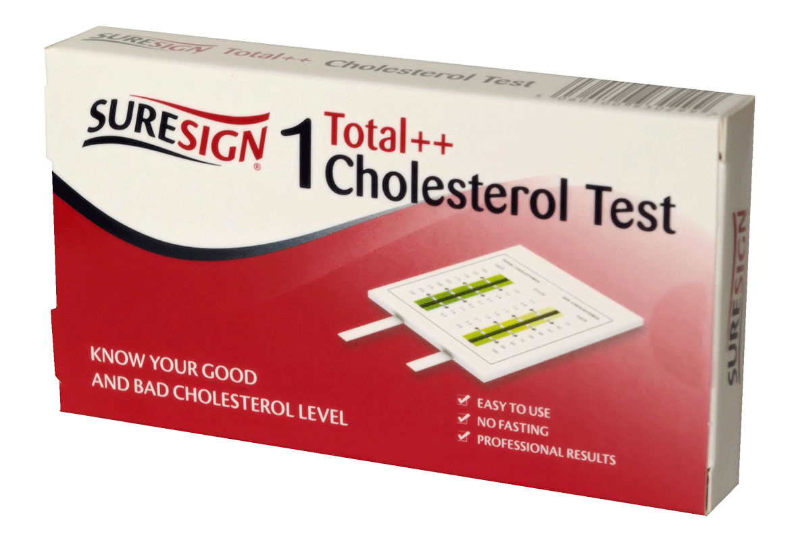
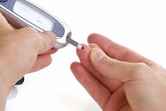
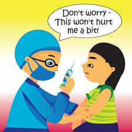

Preventative Health Care
Preventive health care consists of measures taken to prevent diseases rather than curing them or treating their symptoms, this contrasts in method with curative medicine
Preventive health care helps you stay healthy. A doctor isn’t someone to see only when you’re sick. Doctors also provide services like Health Care Screening that help keep you stay healthy.
Types of Preventative Health Care Screening
- Blood Pressure screening for all adults
-  Cholesterol screening for adults of certain ages or at higher risk
-  Diabetes (Type 2) screening for adults with high blood pressure
- HIV & STI screening for everyone ages 15 to 65, and other ages at increased risk
-  Immunization
| Vaccines | Frequency |
|---|---|
| Hepatitis A | Every 3 Years |
| Hepatitis B | Every 3 Years |
| Herpes Zoster | Every 2 Years |
| Human Papillomavirus | Every 10 Years |
| Influenza (Flu Shot) | Every Year |
| Measles & Mumps | Every 7 Years |
| Meningococcal | Every 5 Years |
| Pneumococcal | Every 4 Years |
| Tetanus | Every 5 Years |
| Varicella | Every 10 Years |